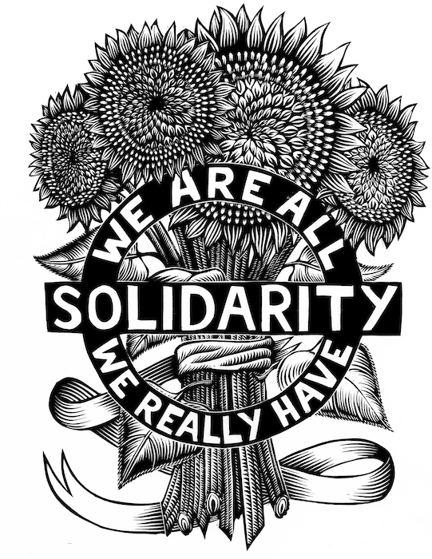
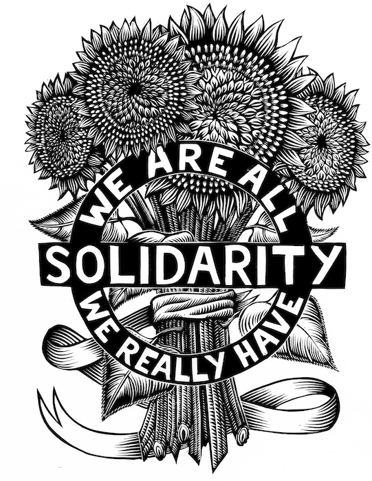
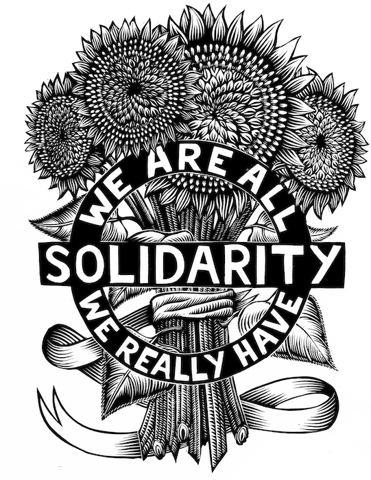

This blog aims to discuss and promote anarchy as a means of building a better world. The blog will showcase some anarchist art, books, philosophy, and more.

Max Stirner has had a considerable influence on anarchist thinking, especially individualist anarchism. Stirner discussed about the non-reality of authority, hierarchy, laws, sins, morality, obligations and sanctity. Stirner’s egoism asserts that all individuals are selfish, and that the motive of everything everyone does is self-interest. This type of thinking has influenced anarchists to be aware that they have power over their decisions and that they own themselves.
The first anarchist currents developed throughout the 18th century as William Godwin promoted philosophical anarchism in England. Max Stirner's thinking paved the way to individualism. And Pierre-Joseph Proudhon's theory of mutualism gained a foothold in France. In the late 1870s, various anarchist schools of thought had become well-defined and a wave of globalization took place from 1880 to 1914. This era of classical anarchism lasted until the end of the Spanish Civil War. Influenced from Proudhon’s mutualism, Mikhail Bakunin promoted collectivist anarchism and joined the International Workingmen's Association, a class worker union which would be known as the First International that formed in 1864 to unite diverse revolutionary currents. The International became influential in politics, with Karl Marx being an influential figure and a member of its General Council. Bakunin's faction and the followers of Proudhon opposed state socialism, advocating political abstentionism and small property holdings. After many disagreements, the Bakuninists were kicked out from the International by the Marxists at the 1872 Hague Congress. Anarchists were treated similarly in the Second International, being kicked out in 1896. With the influence of Peter Kropotkin, a Russian philosopher and scientist, anarcho-communism overlapped with collectivism. Anarcho-communists, who were inspired by the 1871 Paris Commune, advocated for free federations and for the distribution of goods according to one's needs.
At the turn of the century, anarchism had spread globally. It was a significant feature of the international syndicalism movement. Groups of students imported the humanistic pro-science version of anarcho-communism in China. Tokyo was a hotspot for rebellious youth from regions in the Far East that were travelling to the Japanese capital to study. Argentina was a stronghold for anarcho-syndicalism in Latin America. During this period, a minority of anarchists adopted tactics of revolutionary political violence, which was a strategy that became known as propaganda of the deed. The splitting of the French socialist movement into many groups and the execution and exile of many Communards to penal colonies following the suppression of the Paris Commune favored individualist political expression and acts. Although many anarchists distanced themselves from these acts, attempts were made to exclude them from American immigration, including the Immigration Act of 1903, which was also called the Anarchist Exclusion Act. Illegalism was another strategy which some anarchists adopted during this period.
There are various forms of anarchism; however, all anarchism is against hierarchy and authority. Since authority and hierarchy appear in different forms and in different discourses, institutions, and practices, the anarchist critique of these discourses, institutions, and practices has been applied in a variety of ways. The word “anarchism” or “anarchy” comes from the Greek word “anarkhos,” meaning without chiefs or rulers. Anarchism is a way of thinking that opposes hierarchy, authority, and rulers. Anarchism is against all forms of government. An anarchist is someone who refuses to be ruled, someone who cooperates with others not because the law told them to but because they want to. An anarchist is someone who builds relationships through free association and not through authoritarianism. An anarchist is someone who opposes the notion that someone can be above the other, someone who thinks that individuals are born free.
Our contact information
Email: anarchyemail@protonmail.com
Phone #: 094489566859685
Facebook page: Not Real Anarchy Facebook Page
The Anarchist Library
The Anarchist Library: https://theanarchistlibrary.org/special/indexThe Southeast Asian Anarchist Library
The Southeast Asian anarchist Library: https://sea.theanarchistlibrary.org/special/index